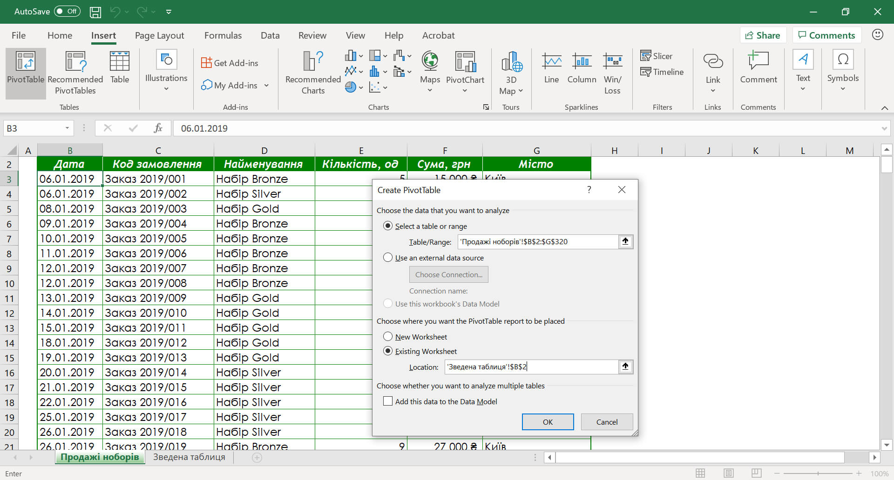
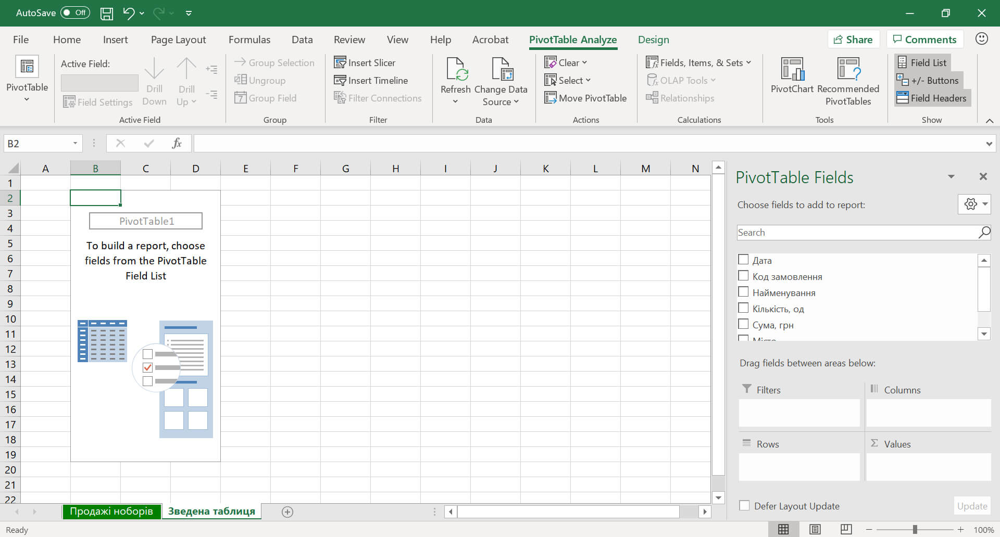
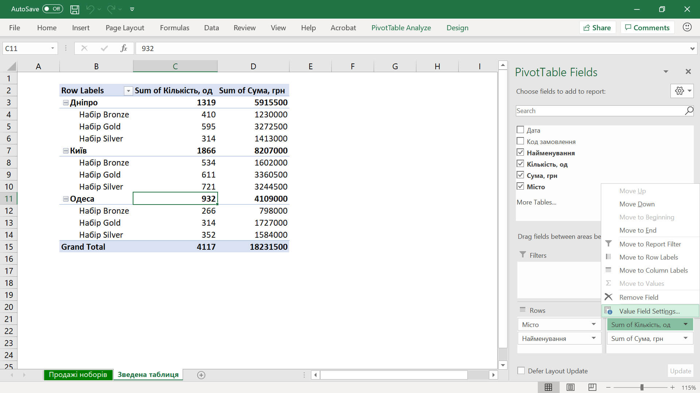
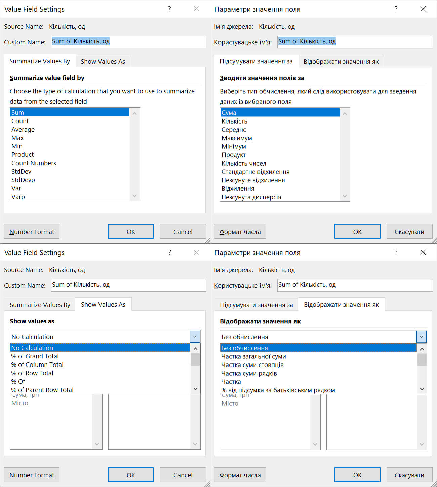
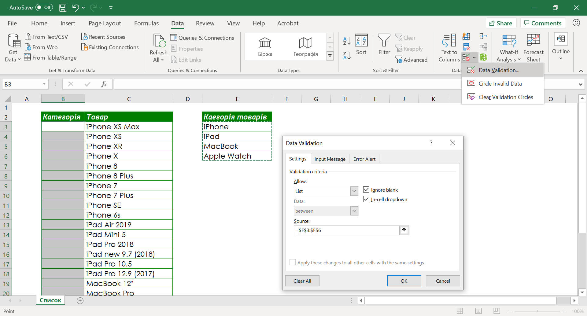
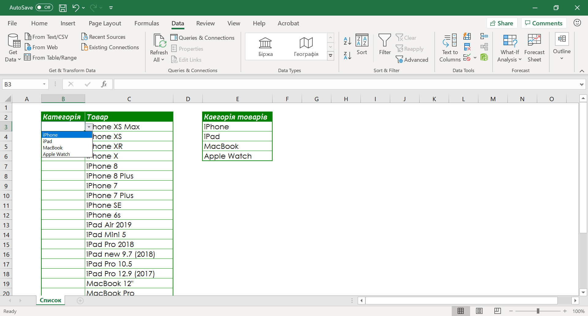
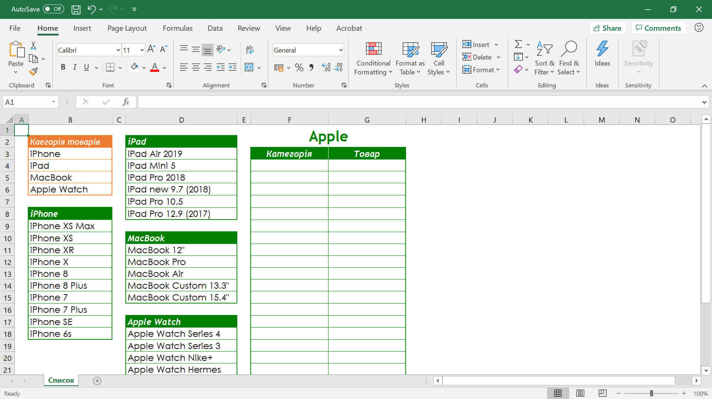
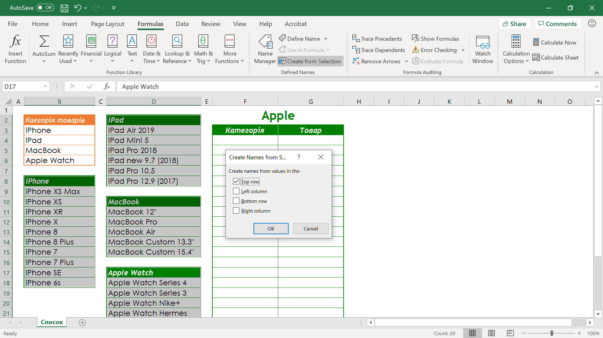
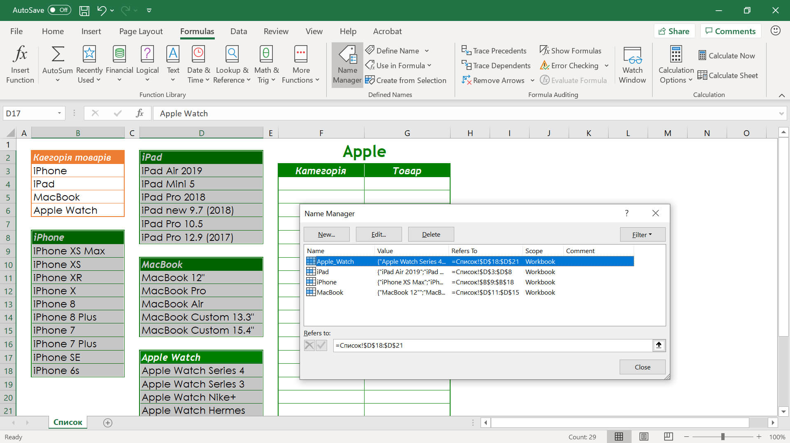
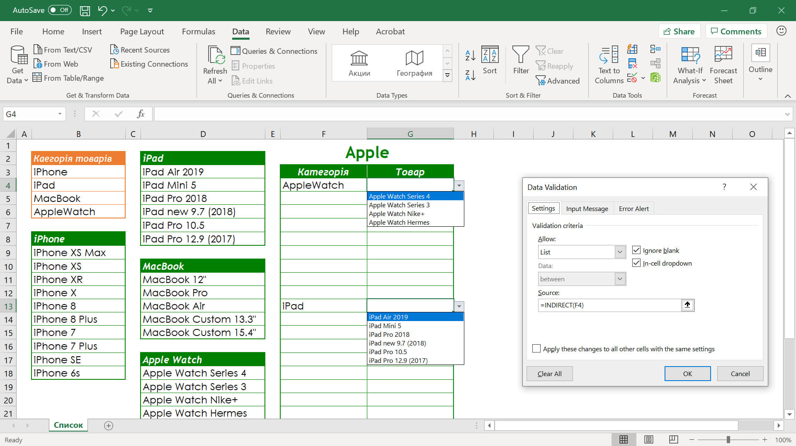

Аналіз даних за допомоги зведених таблиць.
Зведені таблиці.
Зведена таблиця – це ефективний інструмент для зведення, обчислення та аналізу значних об’ємів даних представлених у вигляді таблиць, він спрощує визначення певних закономірностей і тенденцій.
Створення зведеної таблиці в Excel:
- зробити поточною будь-яку клітинку діапазону з даними, але якщо в подальшому до цього діапазону будуть додаватися нові дані, його бажано спочатку перетворити на таблицю Excel;
- перейти до вкладки Insert (Вставлення), у розділі Table (Таблиці) обрати команду PivotTable (Зведена таблиця);
- у діалоговому вікні Create PivotTable (Створення зведеної таблиці) зробити наступні налаштування:
- в полі Table/Range (Таблиця/Діапазон) перевірити – чи обрано потрібний діапазон з даними або вказати новий правильний діапазон. Коли в якості діапазону з даними виступає таблиця Excel, вона не повинна вміщувати Total Row (Рядок підсумків);
- у розділі Choose where you want the PivotTable report to be placed (Виберіть розташування звіту зведеної таблиці) встановити перемикач:
- New Worksheet (Новий аркуш) – до книги Excel буде додано новий аркуш з порожнім макетом зведеної таблиці;
- Existing Worksheet (Наявний аркуш) та у полі Location (Розташування) вказати де саме буде розташований порожній макет зведеної таблиці;
- для застосування обраних параметрів натискаємо кнопку Ок.

Після виконання вище зазначених дій, на аркуші Зведена таблиця з’явиться графічний об’єкт, на якому буде вказана назва зведеної таблиці – PivotTable1 (Зведена таблиця 1), в правій частині вікна панель – макет звіту, на стрічці команд дві додаткові вкладки – Pivot Table Analyze (Аналіз зведених таблиць) та Design (Клонструктор).
Кожна область макета, куди поміщаються поля вихідної таблиці, має своє призначення, саме вони визначають зовнішній вигляд зведеної таблиці і її функціонал.

Макет звіту складається з 4 розділів:
- Filters (Фільтри) – фільтр звіту зведеної таблиці. Якщо встановлено фільтр, то побудова і розрахунок даних зведеної таблиці ведеться для заданого значення.
- Rows (Рядки) – формують заголовки рядків зведеної таблиці, якщо розміщено кілька полів, то вони розміщуються в макеті зверху вниз, забезпечуючи групування даних зведеної таблиці по ієрархії полів (для кожного елемента зовнішнього поля, елементи внутрішнього поля повторюються).
- Columns (Стовпці) – формують заголовки стовпців зведеної таблиці, якщо таких полів кілька, то вони в макеті розміщуються зліва направо, забезпечуючи групування даних зведеної таблиці по ієрархії полів.
- Values (Значення) – обов'язкова область макета для розміщення полів, по яких підводяться підсумки, відповідно до обраної функції. Розміщуватися тут можуть поля довільних типів.
Щоб помістити поле в область макета за замовчуванням, потрібно встановити прапорець напроти імені даного поля в розділі полів. Щоб помістити поле в певну область розділу макета, можна натиснути правою кнопкою миші на ім'я відповідного поля в розділі полів і вибрати команду або перетягнути поле в потрібний розділ макету.
Створення макета зведеної таблиці:
- зробити поточною будь-яку клітинку аркушу Excel де розташований порожній макет зведеної таблиці;
- в панелі Pivot Table Fields (Поля зведеної таблиці) помістити поля вихідної таблиці у певні розділи макету.

Зауважимо, що коли користувач просто встановлює прапорці навпроти полів таблиці, які необхідно додати у звіт, у цьому випадку Excel самостійно визначає їх розташування у розділах макету.
Налаштування полів зведеної таблиці.
Дані полів, що розміщені в області макету Values (Значення), піддаються дії функцій: за замовчуванням, числові дані підсумовуються, а для текстових та дат відбувається розрахунок їх кількості. Для використання інших функцій треба налаштувати параметри поля.
Налаштування полів зведеної таблиці:
- натиснути лівою кнопкою миші на поле, параметри якого потрібно змінити, серед параметрів обрати Value Field Settings (Параметри значення поля);
- у діалоговому вікні Value Field Settings (Параметри значення поля) зробити наступні налаштування:
- в полі Custom Name (Користувацьке ім’я) змінюємо на оригінальну назву імені поля;
- на вкладці Summarize value field by (Підсумувати значення за) вказати потрібну функцію для обробки даних;
- для форматування значень поля натиснути на кнопку Number Format (Формат числа);
- на вкладці Show Values As (Відображати значення як) вибрати спосіб обробки значень в області даних звіту зведеної таблиці, використовуючи значення інших областей даних.
- для застосування обраних параметрів натискаємо кнопку Ок.

(Без обчислення)
(Частка загальної суми)
(Частка суми стовпців)
(Частка суми рядків)
(Частка)
(% від підсумка за батьківським рядком)
(% від підсумка за батьківським стовпцем)
(% від батьківського підсумка)
(Відмінність)
(Зведена відмінність)
(Зі зростаючим підсумком у)
(% від зростаючого підсумка у)
(Сортування від найменшого до найбільшого)
(Сортування від найбільшого до найменшого)
(Індекс)
Якщо потрібно, то у зведеній таблиці, по одному і тому ж вихідному полю можна робити декілька обчислень. Для цього необхідно вихідне поле зі списку полів зведеної таблиці додати в область значень Values (Значення) кілька разів, а потім налаштувати параметри для цього поля.
Додавання обчислюваних полів в зведену таблицю.
У звіт зведеної таблиці не можна додати нові рядки або стовбці для додаткових розрахунків, але можна додати обчислюване поле, за допомогою якого потім вводити формули для розрахунку нових даних на підставі існуючих.
Головні переваги обчислюваних полів:
- можливість додавання і видалення даних із зведеної таблиці без зміни вихідних обчислень;
- можливість автоматичного перерахунку даних при зміні або оновленні зведеної таблиці;
- забезпечення гнучкості зміни обчислень при зміні певних елементів;
- можливість ефективного управління обчисленнями.
Створення обчислюваного поля:
- зробити поточною будь-яку клітинку зведеної таблиці;
- перейти на стрічці команд до вкладки Analyze (Аналіз зведених таблиць), у розділі Calculations (Обчислення) розкрити список Fields, Items, &Sort (Поля, елементи та набори) та обрати команду Calculated Field (Обчислюване поле);
- у діалоговому вікні Insert Calculated Field (Вставлення обчислюваного поля) зробити наступні налаштування:
- в полі Name (Ім’я) ввести ім’я нового поля;
- в полі Formula (Формула) скласти формулу. Формула обов’язково повинна починатися із знаку =, далі, дотримуючись загальних математичних правил, складаємо формулу, вибираючи доступні поля із списку Fields (Поля), з даними яких необхідно провести розрахунки;
- для додавання нового обчислюваного поля до зведеної таблиці натискаємо кнопку Ок.
Налаштування зовнішнього вигляду обчислюваного поля, як і будь-якого іншого поля, відбувається у вікні Value Field Settings (Параметри значення поля).
Списки що розкриваються.
Бувають випадки, коли при заповненні окремих полів (стовпців) таблиці, необхідно точно вказати, які дані можна вводити в ці клітинки. В Excel, такий функціонал можливо реалізувати декількома способами, ми зупинимося на списках що розкриваються.
Список що розкривається – це набір рядків на робочому аркуші з однотипними даними, які взаємопов'язані і мають постійний формат.
Список повинен мати постійну кількість стовпців, а кількість рядків є змінною. Це дозволяє додавати, видаляти, переставляти записи в списку.
Створення списку що розкривається:
- ввести список допустимих значень в один стовпець або рядок. Ці значення будуть присутні в списку що розкривається;
- зробити поточною будь-яку клітинку або діапазон клітинок, які будуть містити список що розкривається;
- перейти на стрічці команд до вкладки Data (Дані), у розділі Data Tools (Знаряддя даних) розкрити список Data Validation (Перевірка даних) та обрати команду Data Validation (Перевірка даних);
- у діалоговому вікні Data Validation (Перевірка даних) зробити наступні налаштування:
- на вкладці Settings (Параметри) серед пунктів списку Allow (Тип даних) оберіть значення List (Список);
- у полі Source (Джерело) вказати діапазон клітинок з допустимими значеннями;
- для застосування обраних параметрів натискаємо кнопку Ок.

Тепер, коли клітинка, що містить список, стане поточною, біля неї з правої сторони з'являтися кнопка. Робимо клік по цій кнопці, щоб розгорнути список і вибрати необхідне значення.

Зв’язані списки.
Зв’язаний список – це звичайний список що випадає, але який може відображати різний перелік елементів, в залежності від значення іншої клітинки.
Розглянемо створення зв’язаного списку на прикладі. Маємо декілька таблиць з даними, одна з них містить категорії товарів, інші назви товарів. Потрібно, щоб в залежності від обраної категорії в клітинки поля Товари, із списку, підставлялися лише ті товари, які належать цій категорії.

Створення зв’язаного списку:
- Створити список що розкривається для поля Категорія:
- виділити порожні клітинки таблиці в полі Категорія;
- перейти на стрічці команд до вкладки Data (Дані), у розділі Data Tools (Знаряддя даних) розкрити список Data Validation (Перевірка даних) та обрати команду Data Validation (Перевірка даних);
- у діалоговому вікні Data Validation (Перевірка даних) зробити наступні налаштування:
- на вкладці Settings (Параметри) серед пунктів списку Allow (Тип даних) оберіть значення List (Список);
- у полі Source (Джерело) вказати діапазон клітинок з допустимими значеннями;
- для застосування обраних параметрів натискаємо кнопку Ок.
- Надати імена діапазонам з назвами товарів:
- виділити усі діапазони клітинок з даними (включно з назвами категорій);
- перейти на стрічці команд до вкладки Formulas (Формули), у розділі Defained Names (Визначені імена) обрати команду Create from Selection (Створити в виділеного);
- у діалоговому вікні Create Names from Selection (Створення імен з виділеного фрагменту) в розділі Create Names from values in the (Створити імена із значень у) встановити прапорець навпроти напису Top row (у рядку вище) та натиснути кнопку Ок;

Зауважимо, що імена, які ми дали діапазонам, повинні в точності збігатися з іменами категорій. Перевірити назви іменованих діапазонів можна звернувшись до команди Name Manager (Диспечер імен), яка знаходиться в тому ж розділі Defained Names (Визначені імена).

Порівнюємо і бачимо, що ім’я категорії Apple Watch не збігається з іменем діапазону Apple_Watch, Excel автоматично змінив назву діапазону. Це пов’язано з вимогами, котрих повинен дотримуватися користувач при складанні імені діапазону, а саме: ім’я повинно бути унікальним, складатися тільки з букв і цифр, інші знаки (окрім знаку підкреслення), символи, в тому числі і символ пропуску, не допускаються. Також, ім’я діапазону не може починатися з цифри.
- перевірити та привести до точного збігу імена категорій та імена діапазонів;
- Cтворення списку що розкривається для поля Товар:
- виділити порожні клітинки таблиці в полі Товар;
- перейти на стрічці команд до вкладки Data (Дані), у розділі Data Tools (Знаряддя даних) розкрити список Data Validation (Перевірка даних) та обрати команду Data Validation (Перевірка даних);
- у діалоговому вікні Data Validation (Перевірка даних) зробити наступні налаштування:
- на вкладці Settings (Параметри) серед пунктів списку Allow (Тип даних) оберіть значення List (Список);
- у полі Source (Джерело) скласти наступну формулу =INDIRECT(F4). Важливо, при складанні формули, посилання повинно бути на ту клітинку, яка знаходиться навпроти поточної;
- для застосування обраних параметрів натискаємо кнопку Ок.

Таким чином ми отримали зв’язаний список, в якому в залежності від обраної категорії товару автоматично підставляються товари які їй належать.